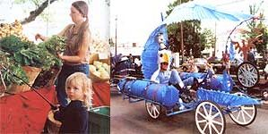
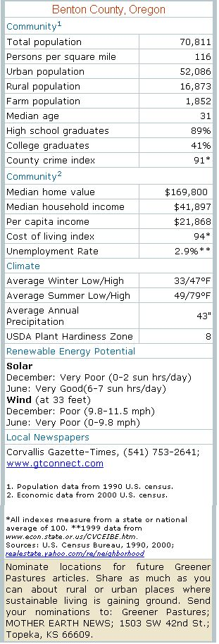

If you want to escape "sagebrush subdivisions, coastal condomania and the ravenous
rampages of suburbia," as former Oregon Governor Tom McCall so eloquently described urban sprawl in 1973, consider Corvallis.
Nearly 30 years ago the State of Oregon established the Land Conservation Development Commission to help preserve farmland and forests around the cities, and to establish urban growth boundaries to stymie sprawl. This progressive planning program has been a smash success, and Corvallis is a prime example.
Bordered to the west by the green hills of the Oregon Coast Range, and to the east by the banks of the Willamette River, nestled beneath Oregon white oaks and towering Douglas firs, and serenaded by the ethereal song of the Swainson's thrush, the cozy city of Corvallis remains true to its Latin namesake: heart of the valley.
The Community of Corvallis is best described as close-knit and progressive. Weathering the long winter months of minnow-breath rain seems to strengthen the feeling of community in this town of 50,000, making it feel more like a village of 500. A cornucopia of sustainability exists in this quaint town: A thriving organic farming community, stable downtown commerce, a state-of-the-art landfill and recycling facility, and a growing alternative transportation movement are surrounded by verdant open-space. But don't expect to establish your hermitage on these green acres. They've largely been set aside as commons for all to enjoy. Instead, you can be a country mouse in the city, and practice urban homesteading. With its environmental ethic, city living in Corvallis makes for easy living.
The downtown district, reminiscent of cozy New England village centers, is a haven for local businesses and an important component in keeping the community connected. On any given day, you'll find both rural and urban dwellers gathering together at the many coffee shops, bookstores and restaurants of downtown Corvallis. Grass Roots bookstore, a local cornerstone, just celebrated three decades of business. The Beanery, a coffee house, is another popular spot where folks gather for their jolt of java (misty winter days support a brisk business), hear musicians or watch the local belly dancing troupe perform.
Despite its relatively small size, Corvallis has plenty of unique places. Nearly Normal's, located near Oregon State University (OSU), is another time-tested Corvallis business. This vegetarian eatery is a popular draw for college students and professionals alike with its original recipes and almost all organically grown produce. The folks at Nearly Normal's maintain a cooperative work environment (even the cooks do dishes) and work with a local organic farm to provide fresh produce for their partially passive-solar, home-turned-restaurant. Local Corvallis restaurants offer fare to feed any appetite, from fish tacos to whole-grain gourmet pizzas baked in wood-fired earthen ovens. (Intaba's Kitchen, a new restaurant in town, uses these traditional earthen ovens, featured in Oregon builder and sculptor Kiko Denzer's article, "Build Your Own Wood-Fired Earthen Oven" ).
With an average of 43 inches of rain per year, and winter temperatures rarely dipping below freezing, the mild climate affords local gardeners and farmers with an exceptionally long growing season, the bounty of which fills the bellies of residents with a delicious variety of fresh, organic produce nearly year-round. More than 10 organic farms sink their roots into the rich alluvial soils surrounding Corvallis, and most of them sell their produce at the twice-weekly farmer's market, as well as through several community supported agriculture programs.
A binding force in this community is the First Alternative Grocery Co-op, arguably one of the finest co-ops in the Country. With an emphasis on local, organic produce and bulk foods, First Alternative is everything a co-op should be: warm, friendly and full of character (as well as characters). But what makes this co-op unique is not so much the food it provides, but the services it offers the community: a well-used message board for ongoing and upcoming event=5, a lending library with books on ecological living, a venue for speakers and presentations, and a comprehensive recycling center that includes bins for everything from Styrofoam to used batteries.
Curbside recycling in Corvallis also is available, and Corvallis Disposal even provides free compost bins to encourage residents to compost their organic materials. All nonrecyclable material is trucked to the local Coffin Butte landfill, one of the most progressive and efficient landfills in the country-and perhaps even the world. Using methane gas produced by decaying organic matter to fuel their generators, the Coffin Butte Research Project produces approximately 2.4 megawatts of electricity per year, enough to power 2,000 homes. Not only does the CBRP produce electricity from rubbish, but according to U.S. Environmental Protection Agency estimates, it also prevents 15,000 tons of carbon dioxide and 100 tons of sulfur dioxide from being released into the atmosphere each year. And Corvallians take their clean air seriously: A comprehensive ban on smoking passed in 1998 allows citizens to breathe deeply, even in restaurants and taverns.
The community actively participates in seeking solutions to other environmental problems. Several grassroots organizations, including the Corvallis Environmental Center and the Greenbelt Land Trust, work to preserve the city's green spaces. Recently, an alternative fuels co-op has formed with the goal of providing biodiesel, which is a vegetable oil-based fuel rather than petrochemical-based, to power the community's diesel cars and trucks.
For pedal-power proponents, Corvallis has a solid network of hike lanes covering 95 percent of the main roads, for a total of 60 miles. Thirteen miles of multi-use paths wind throughout the town, making Corvallis exceptionally friendly to both pedestrians and cyclists. A 1997 survey indicated that more than 13 percent of area residents regularly commute by bicycle, one of the highest percentages in the country. Residents take their cycling seriously: The kinetic sculpture races, part of the annual art, science and technology festival known as da Vinci Days, allow folks to exercise their mental and physical prowess. Teams spend hours, even months, designing these wild-wheeled contraptions. Sporting names like the Killer Tomato or the Maltese Fulcrum, the teams' creations must survive a challenging course, but also must meet the aesthetic demands of the judges and audience.
A city full of cultural creatives, Corvallis is home to OSU and its well-established academic programs; Hewlett-Packard's largest campus lies just northeast of town: and CH2M HILL offers its engineering and design services to promote clean water, safe transportation, efficient industry, and life-enhancing technologies and products. Most polluting industries have passed up Corvallis. Instead of an ugly series of industrial smokestacks, a judicious amount of open-space surrounds and exists within the city. Abutting Corvallis to the north is the 11,000-acre MacDonald-Dunn Research Forest, a treasure for hikers, bikers, runners and horseback riders. Within the city limits several parks, totaling 1,700 acres, provide residents with a natural setting to ramble with the family or frolic with the dog-all within biking distance of downtown. But, apparently, to the progressive inhabitants of Corvallis, 1,700 acres isn't enough-last November, voters showcased their ethos of sustainability-by passing a $7.9 million bond for future open-space acquisition. You can't find much greener pasture than that.
Justin Soares writes from Corvallis, Oregon, where he swears life is as sweet as pecan pie.
|
 Farmer's markets overflowing with local, organically grown fruits and vegetables (left), the annual da Vici Day's crazy kinetic sculpture races (at right), and the beauty of the forest and farmland combine to nourish Corvallis, Oregon residents in body, mind and spirit. |
 |
|